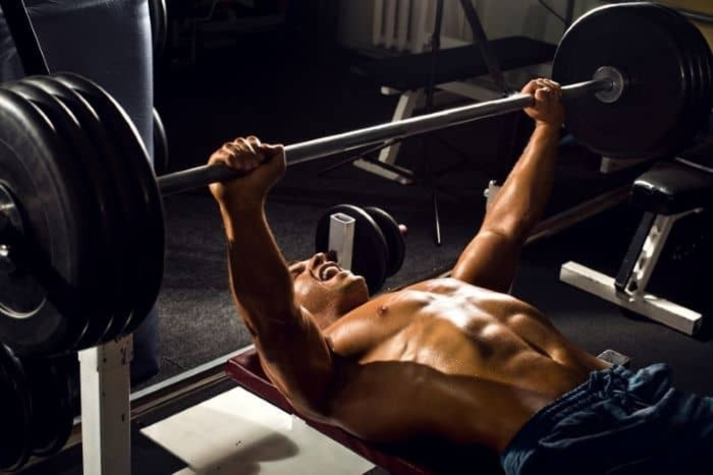

벤치프레스
벤치프레스는 벤치에 등을 대고 누워서 역기를 가슴 높이까지 내렸다가 굽힌 팔꿈치를 쭉 펴면서 들어 올리는 운동이다.
거대한 가슴 근육 발달에는 벤치 프레스만한 운동이 없으며 가슴뿐만 아니라 어깨, 삼두 등 상체 근육 전반을 그 어떤 운동 보다도 고중량으로 소화해낼 수 있는 상체 운동의 최고봉인 운동이다.
- 플랫 벤치프레스
- 인클라인 벤치프레스
- 디클라인 벤치프레스

스쿼트
스쿼트는 바벨 또는 덤벨을 들고 앉았다 일어남으로써, 하반신의 대퇴사두근과 하퇴삼두근, 대둔근, 중전근 등의 근육을 성장시키는 운동이다.
다리 근육을 만드는 데 도움이 될 뿐만 아니라 몸 전체 근육 구축을 촉진하는 환경을 조성하고, 근육 성장에 필요한 호르몬이 분비되며, 체내 근육량을 향상시키는 역할을 한다.
데드리프트
데드리프트는 허벅지 뒤쪽의 대퇴이두근, 엉덩이 근육인 대둔근, 허리를 세우는 데 도움을 주는 척추기립근, 큰 등 근육인 광배근 등 큰 근육은 물론 승모근, 삼각근, 대흉근, 전완근, 복근 등이 개입하는 전신 복합운동이다.
허리의 안정화와 하체 근육 단련에 효과적이고, 근력과 순발력 훈련도 된다. 많은 근육이 동시에 사용돼 신진대사 활성화를 촉진한다.
- 컨벤셔널 데드리프트
- 루마니안 데드리프트
- 스모 데드리프트